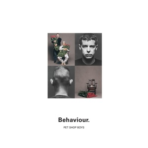

Pet Shop Boys - Behaviour
The Pet Shop Boys are almost certainly my favourite synth-pop band. The band have produced album after album which I would mark as a 10/10, and this album, Behaviour, is regarded as their most critically successful. I can see why - it's a much deeper, sadder and more introspective album than their previous efforts (yes, including the album literally titled "Introspective"), and while that means it isn't exactly something you can tap your foot to, to me this album feels like a fog which you can just sit in for hours, if that makes sense to anyone. And when I was making my own Desert Island Discs and I was debating over which Pet Shop Boys song to include, it was between two tracks on this album ("Being Boring" and "Jealousy" if you're interested - I settled on "Jealousy"). So, it's a pretty solid album. But how is it on the B-side front? Well, it does get a bit complicated.
To start with, we have the standard B-sides that you get with singles - one each. However, things get a tad complicated because of the third single. You see, despite being one of the best songs they ever wrote, the album's second single, "Being Boring", peaked at number 20 in the UK charts, the first time a single of theirs had peaked outside the top 10 since 1986. So, the lads spotted this and realised they probably needed to offer something extra on the next single to encourage it into the top 10. And so, they did a mad cover of U2's "Where the Streets Have No Name", mashed up with Frankie Valli's "I Can't Take My Eyes Off of You". Now, despite sounding totally bonkers on paper, this idea made for a pretty solid track. So, is this a non-album single? No, because it's actually a double A-side with "How Can You Expect to Be Taken Seriously?", off the album. Yes, three long names on one single - you should see the sleeve design. However, this track appeared in a remixed form, the remix done by Brothers in Rhythm (who will reappear later), so since this remix had top billing as the A-side, I'll pass it. The next single, "Jealousy", is a similar case, although the remix is just some lovely orchestral overdubs which really add to the track, so that'll go on as well. Each of these singles have a B-side each.
But the plot thickens a little more for this album because a year after it, the Pet Shop Lads(?) released Discography, a greatest hits album of all their singles, plus two new tracks, "DJ Culture" and "Was It Worth It?", both produced by the previously mentioned Brothers in Rhythm. In these scenarios, I tend to pack the greatest hits tracks into the B-side bit, and the lads themselves did so on their Further Listening disc, their own version of what I'm doing here (although it's not as thorough, I must say). And so, we can add these two tracks, and their single B-side each, to our disc. "DJ Culture" had a second CD release which featured "DJ Culturemix", a remix by the techno band The Grid, but since it's a remix and not the main A-side I decided not to include it. Its B-side, an orchestral Pet Shop Boys medley, I have included. From here, the only other things to mention are two remixes which the Pet Shop Boys made themselves: the Dub Mix of "So Hard" and Part 2 of the B-side "Music for Boys". Oh, and a random 14-second track called "Generic Jingle" which was included on that Further Listening thing I mentioned. That can go on here as well because it's random and weird and 14 seconds doesn't hurt anyone (except when it does). And so, altogether, we get this:
CD 2: Singles
| No. | Title | Original release | Length |
|---|---|---|---|
| 1 | It Must Be Obvious | "So Hard" single, 1990 | 4:21 |
| 2 | We All Feel Better in the Dark | "Being Boring" single, 1990 | 4:00 |
| 3 | Where the Streets Have No Name (I Can't Take My Eyes Off You) | "Where the Streets Have No Name (I Can't Take My Eyes Off You)" / "How Can You Expect to Be Taken Seriously?" single, 1991 | 4:33 |
| 4 | How Can You Expect to Be Taken Seriously? (7" Perfect Attitude Mix) | 4:10 | |
| 5 | Bet She's Not Your Girlfriend | 4:28 | |
| 6 | Jealousy (7" Version) | "Jealousy" single, 1991 | 4:16 |
| 7 | Losing My Mind | 4:34 | |
| 8 | DJ Culture | "DJ Culture" single, 1991 | 4:16 |
| 9 | Music for Boys | 3:36 | |
| 10 | Overture to Performance | "DJ Culturemix" single, 1991 | 6:15 |
| 11 | Was It Worth It? | "Was It Worth It?" single, 1991 | 4:22 |
| 12 | Miserablism | 4:11 | |
| 13 | Generic Jingle | Behaviour/Further Listening compilation, 2001 | 0:14 |
| 14 | So Hard (Dub Mix) | "So Hard" single, 1990 | 7:30 |
| 15 | Music for Boys (Part 2/Ambient Mix) | "DJ Culture" single, 1991 | 6:10 |
| 58:29 |
But B-sides aren't the only things the Pet Shop Boys deal in! Being a dance-adjacent group, despite this album being not suited to a nightclub at all, there's quite a few extended mixes of songs available out there, ten in total: five of tracks on the album and five of B-sides. All of these 12" mixes were released on their respective singles, apart from one song: "This Must Be the Place I Waited Years to Leave", which never had a single release, and the Boys felt themselves nice enough to donate the extended version of this track, which they I guess just had lying around, to the Japanese market. So all the extended mixes together is:
CD 3: Extended mixes
| No. | Title | Original release | Length |
|---|---|---|---|
| 1 | Being Boring (Extended Mix) | "Being Boring" single, 1990 | 10:40 |
| 2 | This Must Be the Place I Waited Years to Leave (Extended Mix) | Japanese special edition, 1990 | 9:30 |
| 3 | How Can You Expect to Be Taken Seriously? (Extended Mix)* | "Where the Streets Have No Name (I Can't Take My Eyes Off You)" / "How Can You Expect to Be Taken Seriously?" single, 1991 | 6:05 |
| 4 | So Hard (Extended Dance Mix) | "So Hard" single, 1990 | 6:38 |
| 5 | Jealousy (Extended Mix)* | "Jealousy" single, 1991 | 7:58 |
| 6 | We All Feel Better in the Dark (Extended Mix) | "Being Boring" single, 1990 | 6:48 |
| 7 | Where the Streets Have No Name (I Can't Take My Eyes Off You) [Extended Mix] | "Where the Streets Have No Name (I Can't Take My Eyes Off You)" / "How Can You Expect to Be Taken Seriously?" single, 1991 | 6:46 |
| 8 | Losing My Mind (Disco Mix) | "Jealousy" single, 1991 | 6:07 |
| 9 | DJ Culture (Extended Mix) | "DJ Culture" single, 1991 | 6:51 |
| 10 | Was It Worth It? (12" Mix) | "Was It Worth It?" single, 1991 | 7:15 |
| 74:21 |
* These are the extended mixes of the single versions

Released: 22 October 1990
Length: 49:01
Genre: Synth-pop
Personal rating: 10 / 10
Favourite song: "Jealousy"
- "Being Boring" – 6:49
- "This Must Be the Place I Waited Years to Leave" – 5:30
- "To Face the Truth" – 5:33
- "How Can You Expect to Be Taken Seriously?" – 3:56
- "Only the Wind" – 4:20
- "My October Symphony" – 5:18
- "So Hard" – 3:58
- "Nervously" – 4:06
- "The End of the World" – 4:43
- "Jealousy" – 4:48